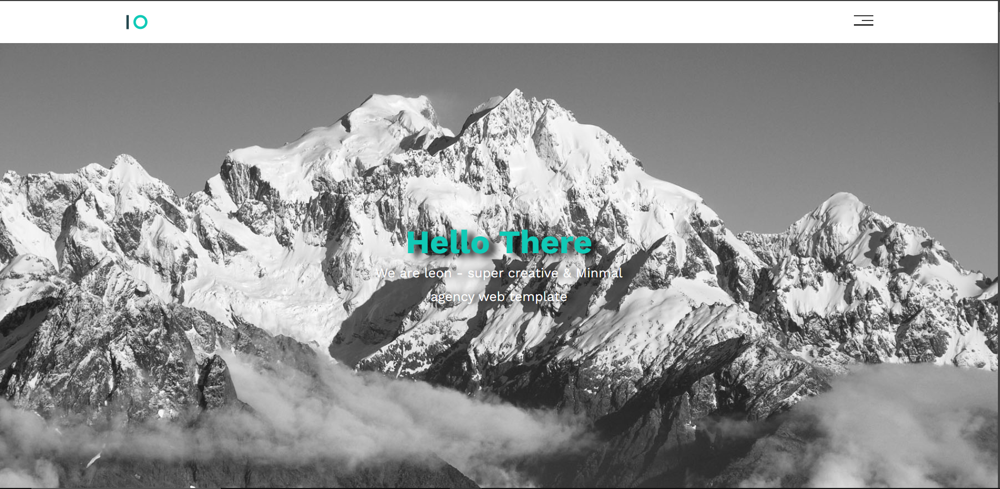

hi, it's Abdullah
I am a Software Developer graduate from Palestine Technical University - Khadoorie. I am passionate about web development and dedicated to creating innovative and user-friendly web solutions. With a solid foundation in front-end technologies, I am excited to further enhance my skills and contribute to the field of web development.

Education

-
Palestine Technical University - Khadoorie
Degree: Bachelor of Applied Computing
Graduation Year: 2024
Achievements:
- Graduated with a GPA of 87.1 (High Distinction)
- Dean’s List
- 2nd Class Honors
-
Self-Study Courses
Platform: Elzero Web School
Courses:
- HTML
- CSS
- JavaScript
To further enhance my web development skills, I undertook self-study courses from Elzero Web School. These courses helped me solidify my understanding of HTML, CSS, and JavaScript, enabling me to build more sophisticated and responsive web applications.
Projects
Here are some of the projects I’ve worked on, showcasing my skills in front-end development and my passion for creating engaging web applications.
-
YKPO Cafe

For my graduation project, I developed a website for Ykpo Cafe, a food ordering and reservation platform. This project involved designing an intuitive user interface and implementing a points system to enhance user engagement.
Technologies Used: HTML, CSS, JavaScript
Features:
- Real-time data validation for user inputs
- Responsive design for various devices
- Interactive and user-friendly interface
Githup Link: View Project
-
Leon
This was one of the projects that I implemented after I completed the HTML and CSS courses. It is a simple website that displays services for Lyon’s default “non-existent” website, and it is a responsive website. system to enhance user engagement.
Technologies Used: HTML, CSS
Features:
- Responsive design for various devices
- Interactive and user-friendly interface
Live: View Project
Githup Link: View Project